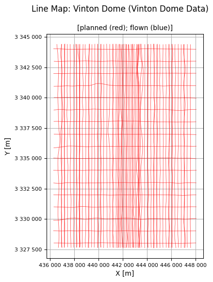
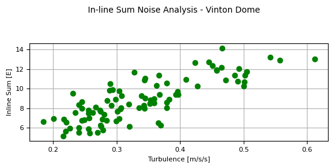
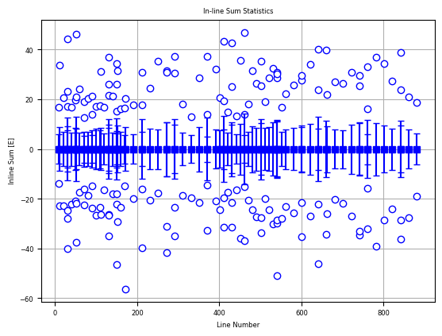
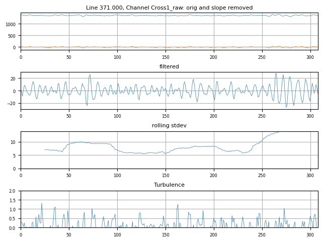
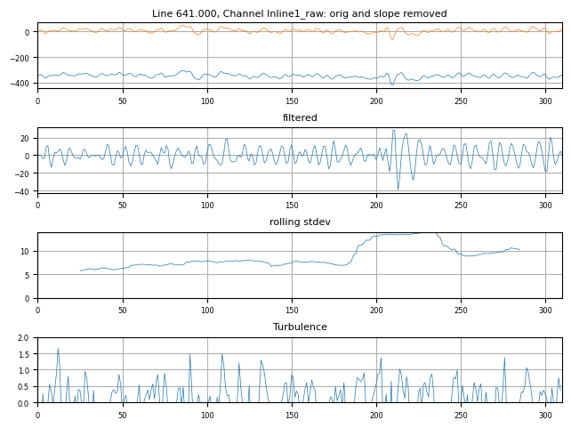

FTG Noise Analysis¶
The functions here are for the purpose of checking for high noise in FTG data.
Here we demonstrate their use on the Vinton Dome airborne gravity gradiometer survey data.
Ensure you have run the Prepare_XYZ notebook first so that the Vinton Dome data are prepared for review.
Import the required modules, and set the path to the geowhizz files.
from pathlib import Path
import galileoQC as qc
vintonHDF_file = Path(r'./VintonData/VintonDome.hdf5')
if not vintonHDF_file.exists():
%run ./Prepare_VintonDomeData.ipynb
Accessing XYZ data in VintonData/VintonDome.xyz.
First few records are:
/ --------------------------------------------------------------------
----------
/ XYZ EXPORT [09/21/2023]
/ DATABASE [Z:\Documents\GitHub\AirGravQC\examples\SourceData\Vinton
Dome_BellGeo_FTG_acquisitionQC.gdb]
/ --------------------------------------------------------------------
----------
/
/ X Y Lon Lat Altitude
Drape Terrain Cross1_raw Cross2_raw Cross3_raw Inline1_raw
Inline2_raw Inline3_raw TC_Txx_100 TC_Txz_100 TC_Tyx_100
TC_Tyy_100 TC_Tyz_100 TC_Tzz_100 Txx_slv Txz_slv
Tyx_slv Tyy_slv Tyz_slv Tzz_slv HHMMSS
Time YYMMDD
/============ ============ ============== ============== ============
============ ============ ============ ============ ============
============ ============ ============ ============ ============
============ ============ ============ ============ ============
============ ============ ============ ============ ============
========== ================== ==========
/
//Flight 0
//Date 2008/07/06
Line 11
Found 10 header records
Found 91 lines
Found 28 fields
Channel precisions (number of decimal places):
[3 3 8 8 3 3 3 2 2 2 2 2 2 2 2 2 2 2 2 2 2 2 2 2 2 1 3 1]
Creating: VintonData/VintonDome.hdf5
Setting BlockID = Vinton Dome Data for VintonDome.hdf5.
Setting Acquirer = Bell Geospace for VintonDome.hdf5.
Changed CoordFrame attribute(s) for VintonDome.hdf5.
Changed channel attribute(s) for Altitude in VintonDome.hdf5.
Changed channel attribute(s) for Drape in VintonDome.hdf5.
Changed channel attribute(s) for Lat in VintonDome.hdf5.
Changed channel attribute(s) for Lon in VintonDome.hdf5.
Changed channel attribute(s) for Terrain in VintonDome.hdf5.
Changed channel attribute(s) for Time in VintonDome.hdf5.
No changes made.
No changes made.
Changed channel attribute(s) for X in VintonDome.hdf5.
Changed channel attribute(s) for Y in VintonDome.hdf5.
Changed channel attribute(s) for Cross1_raw in VintonDome.hdf5.
Changed channel attribute(s) for Cross2_raw in VintonDome.hdf5.
Changed channel attribute(s) for Cross3_raw in VintonDome.hdf5.
Changed channel attribute(s) for Inline1_raw in VintonDome.hdf5.
Changed channel attribute(s) for Inline2_raw in VintonDome.hdf5.
Changed channel attribute(s) for Inline3_raw in VintonDome.hdf5.
Changed channel attribute(s) for TC_Txx_100 in VintonDome.hdf5.
Changed channel attribute(s) for TC_Txz_100 in VintonDome.hdf5.
Changed channel attribute(s) for TC_Tyx_100 in VintonDome.hdf5.
Changed channel attribute(s) for TC_Tyy_100 in VintonDome.hdf5.
Changed channel attribute(s) for TC_Tyz_100 in VintonDome.hdf5.
Changed channel attribute(s) for TC_Tzz_100 in VintonDome.hdf5.
Changed channel attribute(s) for Txx_slv in VintonDome.hdf5.
Changed channel attribute(s) for Txz_slv in VintonDome.hdf5.
Changed channel attribute(s) for Tyx_slv in VintonDome.hdf5.
Changed channel attribute(s) for Tyy_slv in VintonDome.hdf5.
Changed channel attribute(s) for Tyz_slv in VintonDome.hdf5.
Changed channel attribute(s) for Tzz_slv in VintonDome.hdf5.
"Traverse" line variety set for given flight-lines.
"Control" line variety set for given flight-lines.
Whizz Version 1.0
Acquirer: Bell Geospace
BlockID: Vinton Dome Data
ProjectName: Vinton Dome
Coordinates
AltitudeChannel: Altitude
GeoDatum: WGS84
HeightDatum: WGS84
LatitudeChannel: Lat
LongitudeChannel: Lon
Projection: UTM
TimeChannel: Time
UTMZone: 15
XChannel: X
YChannel: Y
91 lines: total distance flown [km] = 1,439.4
91 lines:
['10.000', '100.000', '11.000', '110.000', '111.000', '120.000',
'130.000', '131.000', '131.100', '140.000', '150.000', '151.000',
'151.100', '151.200', '160.000', '170.000', '171.000', '191.000',
'20.000', '211.000', '211.100', '231.000', '251.000', '271.000',
'271.100', '291.000', '291.100', '30.000', '31.000', '31.100',
'311.000', '331.000', '351.000', '371.000', '371.100', '391.000',
'40.000', '401.000', '411.000', '411.100', '421.000', '431.000',
'431.100', '441.000', '451.000', '461.000', '461.100', '471.000',
'481.000', '491.000', '50.000', '501.000', '501.100', '51.000',
'51.100', '511.000', '521.000', '531.000', '541.000', '541.100',
'541.200', '551.000', '561.000', '581.000', '60.000', '601.000',
'601.100', '621.000', '641.000', '641.100', '661.000', '661.100',
'681.000', '70.000', '701.000', '71.000', '721.000', '741.000',
'741.100', '761.000', '761.100', '781.000', '80.000', '801.000',
'821.000', '841.000', '841.100', '861.000', '881.000', '90.000',
'91.000']
28 channels:
['Altitude', 'Cross1_raw', 'Cross2_raw', 'Cross3_raw', 'Drape',
'HHMMSS', 'Inline1_raw', 'Inline2_raw', 'Inline3_raw', 'Lat', 'Lon',
'TC_Txx_100', 'TC_Txz_100', 'TC_Tyx_100', 'TC_Tyy_100', 'TC_Tyz_100',
'TC_Tzz_100', 'Terrain', 'Time', 'Txx_slv', 'Txz_slv', 'Tyx_slv',
'Tyy_slv', 'Tyz_slv', 'Tzz_slv', 'X', 'Y', 'YYMMDD']
No flight data found in data file so no report possible.
Whizz Version 1.0
Acquirer: Bell Geospace
BlockID: Vinton Dome Data
ProjectName: Vinton Dome
Sample time and distance statistics
Min = 1.000 s, 40.7 m
Max = 1.000 s, 65.4 m
Mean = 1.000 s, 51.8 m
Stdev = 0 s, 3 m

The in-line sum of FTG data is defined as the sum of the three in-line component data divided by \(\sqrt{3}\), after bandpass filtering from \(0.03\,Hz\) to \(0.1\,Hz\), or similar frequencies.
By construction, the in-line sum should ideally be zero and higher values are indicative of the noise in the data.
The ilsNoiseAnalysis function reports flight-lines with in-line sum greater than the given threshold (the noiseSpec) and plots the in-line sum for each survey line against the turbulence for that line. Higher turbulence generally results in higher noise and the plot allows one to decide on a reasonable turbulence limit for the data. In addition, flight-lines with an in-line sum that is off the general trend (high in-line sum at low turbulence) should be questioned even if they meet specification.
The Vinton Dome data used in testing did not include a turbulence channel but did have a vertical velocity channel. This is supplied to ilsNoiseAnalysis and differenced to form a vertical acceleration channel as a proxy for turbulence.
In this example, we get very low noise estimates because we are inputting (despite the channel names) final transformed data. The check should be applied to raw data.
qc.ilsNoiseAnalysis(
vintonHDF_file, 'Inline1_raw', 'Inline2_raw', 'Inline3_raw',
noiseSpec=17.0, vertdispl='altitude')


Any rectification process can down-convert high frequency vibration into the signal band of a sensor. Gravity gradiometers have an intrinsic rectification process via their sensitivity to products of rotational velocity so it is useful to check for excess high frequency signal since it may lead to error in the final data.
The function checkHighFreq checks for unusually high amplitude, high frequency signal in the raw gradient channels. The input gradient channels are high-pass filtered and a rolling standard deviation is used to find periods of higher amplitudes. High turbulence is sometimes associated with high frequency noise so the turbulence is also plotted for comparison.
Experience with FTG data suggests that sections of data where checkHighFreq finds high frequency noise above \(50\,E\) are of concern and ought to be followed up with the service provider.
A plot showing where the high frequency noise occurs along line is shown for all lines that have excess high frequency signal. Despits the names of the input channels, the Vinton Dome data have been filtered and so the noiseLimit has been artifically set here to \(14\,E\) just to get a plot for the example.
qc.checkHighFreq(
vintonHDF_file, noiseLimit=14,
channels=[
'Cross1_raw', 'Cross2_raw', 'Cross3_raw',
'Inline1_raw', 'Inline2_raw', 'Inline3_raw'
],cutoffs=[0.1, 0.48], vertdispl='altitude', verbose=False, plot_flag=True)
Checked 91 lines; 2 lines had high frequency signal above 14.

